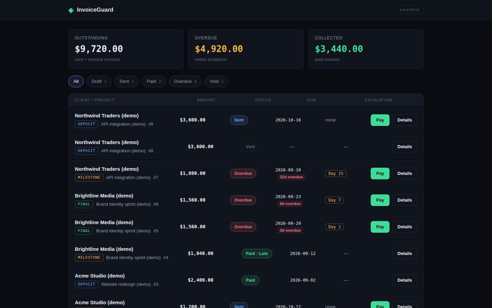
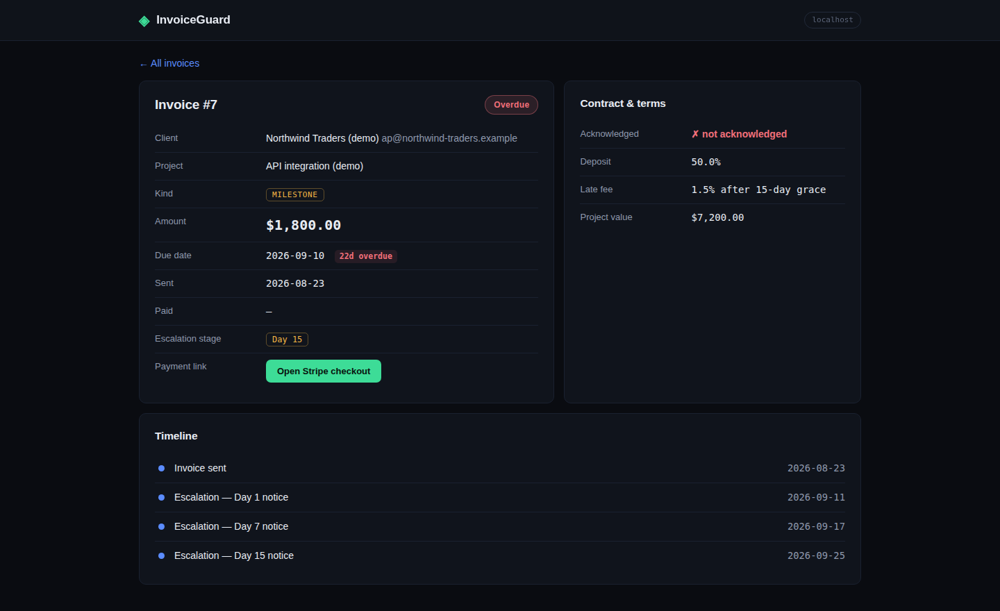

Open-source · Apache-2.0 · v0.1.0
InvoiceGuard ties a deposit link to a contract with a late-fee clause — then runs your collections for you: a polite nudge on day 1, a firm reminder on day 7, a formal notice on day 15. When the client pays, Stripe tells InvoiceGuard and the invoice marks itself paid.
| Invoice | Status | Amount |
|---|---|---|
| Deposit · Website redesign | paid | $2,400.00 |
| Final · Brand sprint | overdue · day7 | $1,560.00 |
| Milestone · API integration | overdue · day15 | $1,800.00 |
| Deposit · API integration | sent | $3,600.00 |
Illustrative mockup of the dashboard's invoice list — see real screenshots below.
Features
Every feature below ships in v0.1.0 and is covered by the test suite. No vaporware.
invoice create --kind deposit makes a real Stripe payment link, tagged with your invoice id so payments map back automatically. Test-mode friendly.
Generates a contract with a late-fee clause (your rate, your grace period). The client acknowledges it by accepting the deposit link.
Day-1 nudge → day-7 reminder → day-15 formal notice quoting the late-fee clause. Idempotent, cron-friendly, templates you can edit.
Stripe's checkout.session.completed event marks the invoice paid — verified with real HMAC signature checks. No polling.
Invoice list with status filters, per-invoice timelines of every escalation, totals and counts — served from your own machine.
Clients, projects, invoices, dunning, dashboard — all from the terminal. SQLite underneath, Docker Compose included.
How it works
Create the project, generate the contract with its late-fee clause, and send the deposit link. The client accepting the link is their acknowledgment.
project createinvoice create --kind deposit
A daily cron run sends the next escalation stage from your editable templates. Each stage fires once — never twice.
check-due0 9 * * *
Stripe's webhook marks the invoice paid automatically. Watch it happen on the dashboard timeline.
POST /webhooks/stripeinvoiceguard dashboard
Screenshots
Captured from InvoiceGuard v0.1.0 running locally — not mockups.

Status filters, outstanding/overdue/collected totals, and the current escalation stage on every row.

Amount, status, payment link, due date, and a chronological timeline of every dunning event.
Screenshots show seeded demo data — every sample client and project is labeled (demo) and is not a real client.
FAQ
Yes. It's open source under the Apache-2.0 license — use it, modify it, no account, no subscription. Stripe's own fees apply when you collect real payments, as with any Stripe integration.
For payment links, yes — that's how clients pay. Everything else (contracts, dunning, dashboard) works without it. Stripe's test mode lets you try the full flow with test keys before touching real money.
In a SQLite database on your own machine (~/.invoiceguard/invoiceguard.db by default). There's no cloud account and nothing phones home.
No — v1 records a client acknowledgment (the deposit link being paid counts as acceptance of the terms). Real e-signature capture is on the roadmap.
Through your SMTP provider (Gmail App Password, SendGrid, anything). You edit the three markdown templates; a daily cron run sends the next stage. Each stage is sent at most once per invoice.
Stripe sends a checkout.session.completed webhook to your dashboard, which verifies the signature and marks the invoice paid automatically. You can also mark invoices paid manually from the CLI.
It's designed to work alongside whatever you already use. InvoiceGuard handles the deposit link, the late-fee contract, and the collections — your existing tool can keep doing the rest.
Five minutes: install, add a test key, create your first deposit link. The collections run themselves after that.
Read the quickstart